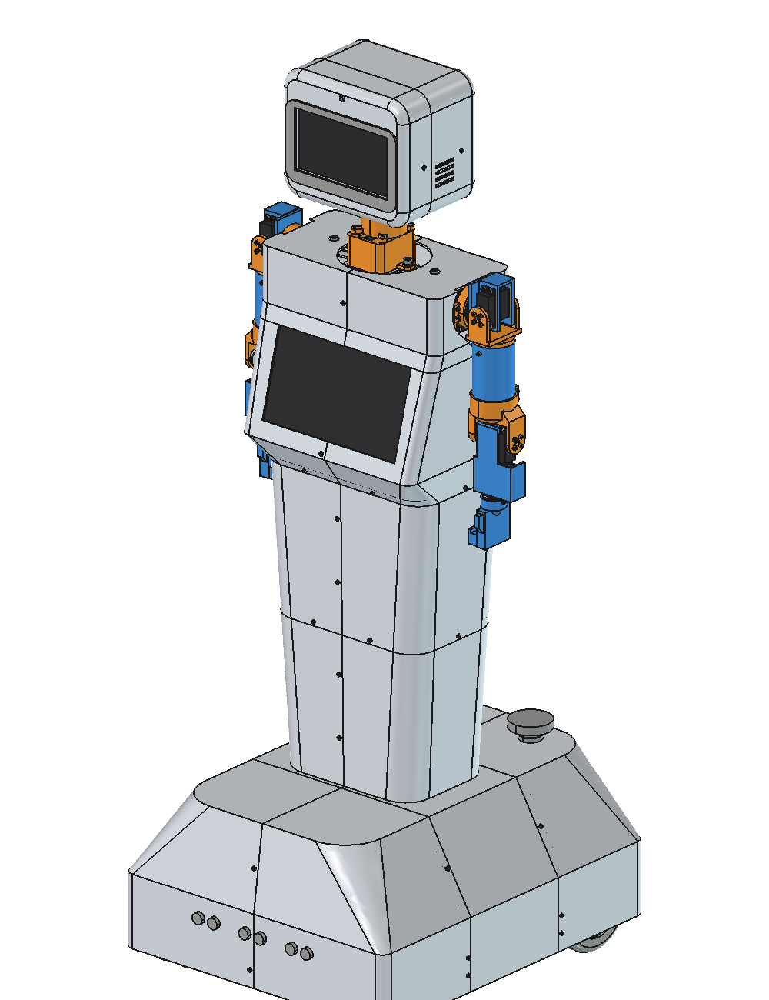
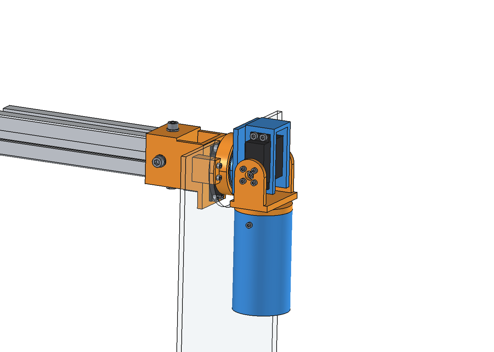
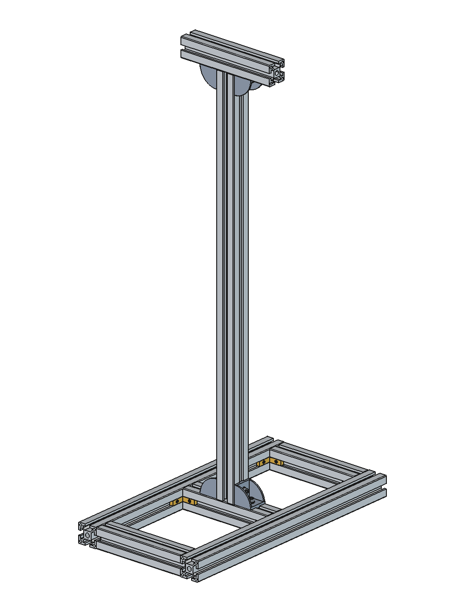
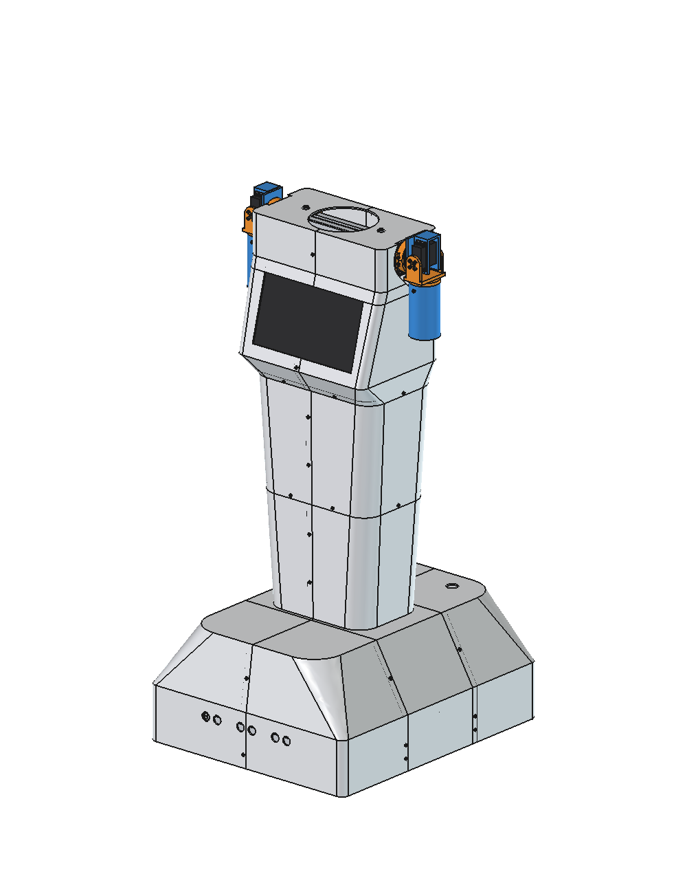
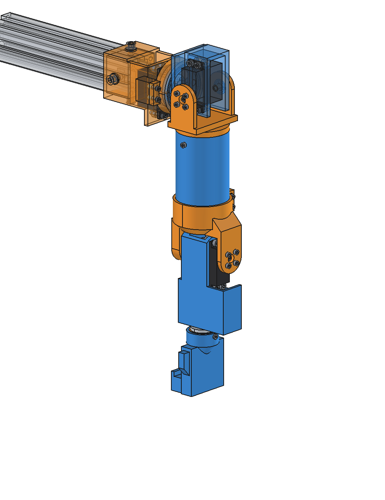
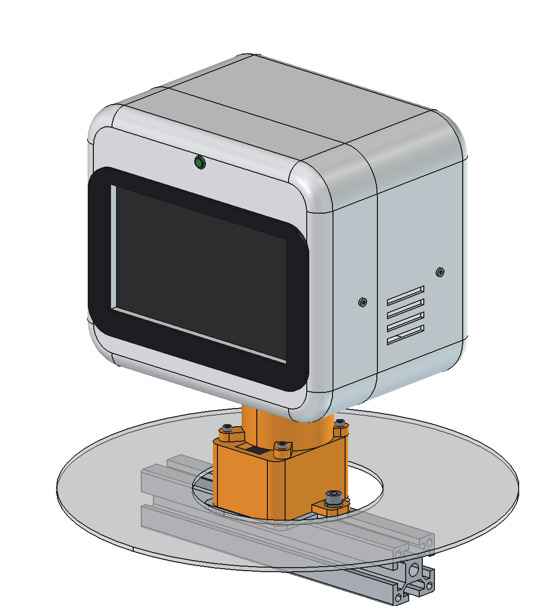
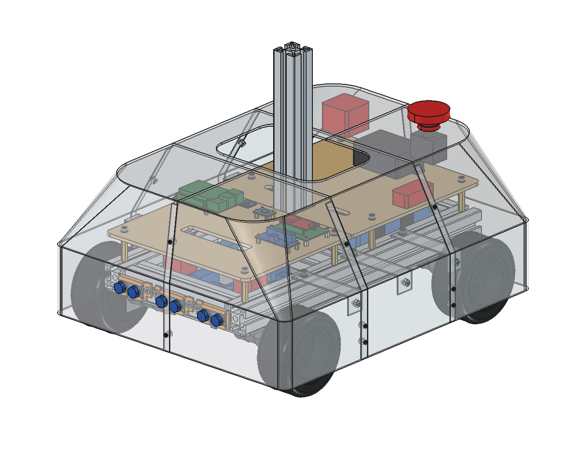

Tekerlekli insansı robot
Robot FreeCAD'de altı modül olarak çizildi ve tek bir ana montajda birleşti. Her modülün raporunda görseller, bağlantı tablosu, 3D baskı tablosu, çakışma taraması ve hesaplar var.

Ana montaj
Bütün modüller tek dosyada: iki kol, kafa, kabuk ve taban; eklemlerin hareketi ve çakışma özeti.

Omuz
İki eksenli omuz: öne-arka ve yana açma, rulmanlı yatak.

İskelet
Sigma profil şase, gövde direği ve omuz traversi.

Kabuk
Gövde ve etek; X2D yazıcıya bölünmüş 15 baskı parçası, ekran yuvası.

Dirsek
Dirsek, bilek ve el; kol zincirinin tork hesabı.

Kafa
Sağa-sola ve öne-arka dönen boyun, yüz ekranı, vizör ve kamera.

Taban
Motorlar, tekerlekler, akü ve elektronik; devrilme, motor ve akü hesapları.
Tahmini ölçüler raporlarda "tahmini" diye işaretli. Kaynak dosyalar: GitHub deposu.